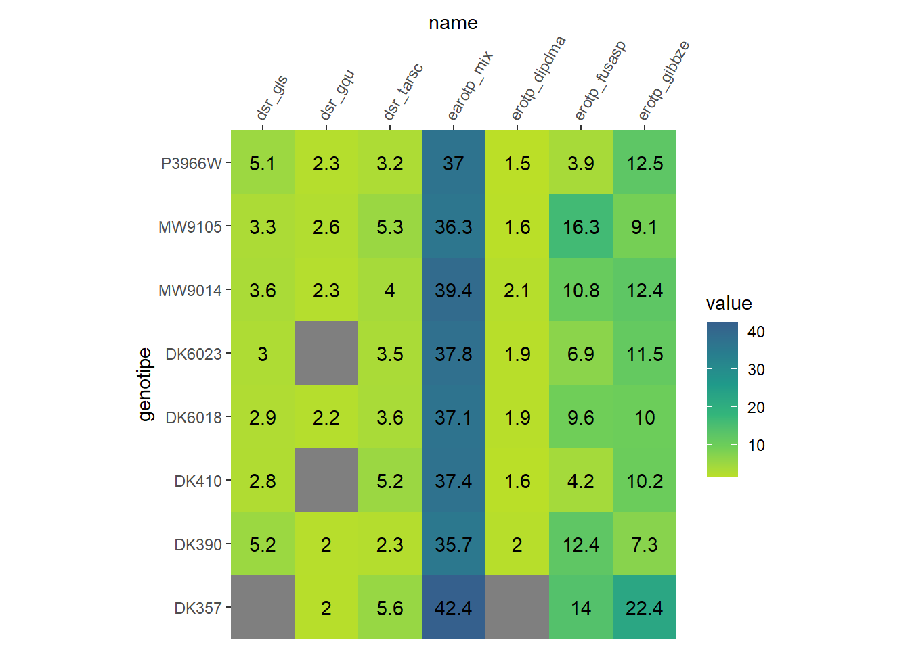
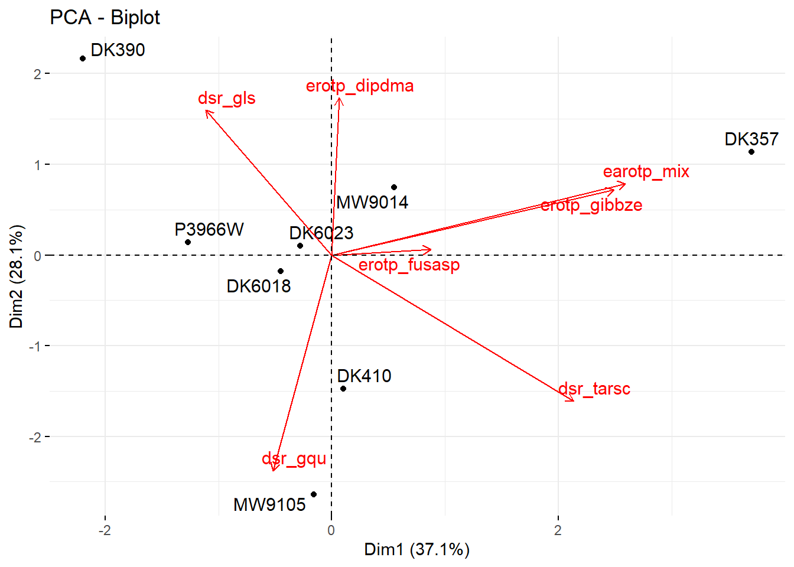
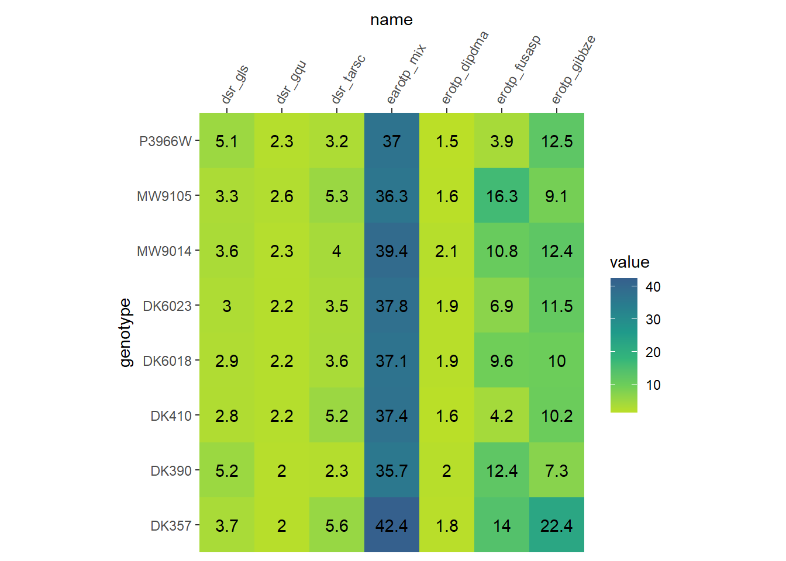

knitr::opts_chunk$set(echo = FALSE, warning = FALSE, message = FALSE)
pacman::p_load(tidyverse, rio, factoextra, missMDA, FactoMineR)Session setup
Rows: 8
Columns: 8
$ genotipe <chr> "MW9014", "MW9105", "DK390", "DK357", "DK410", "DK6023", …
$ earotp_mix <dbl> 39.38520, 36.30138, 35.66848, 42.42977, 37.37387, 37.7779…
$ erotp_fusasp <dbl> 10.827804, 16.346530, 12.381962, 14.000000, 4.193821, 6.9…
$ erotp_gibbze <dbl> 12.444042, 9.105300, 7.273718, 22.405541, 10.240505, 11.5…
$ erotp_dipdma <dbl> 2.114198, 1.636792, 1.995879, NA, 1.596974, 1.902307, 1.5…
$ dsr_gqu <dbl> 2.263158, 2.602210, 2.019347, 2.010870, NA, NA, 2.255556,…
$ dsr_gls <dbl> 3.561152, 3.322303, 5.192826, NA, 2.790571, 3.032397, 5.0…
$ dsr_tarsc <dbl> 4.030769, 5.333333, 2.312500, 5.636364, 5.234043, 3.53125…

Datos completados!
